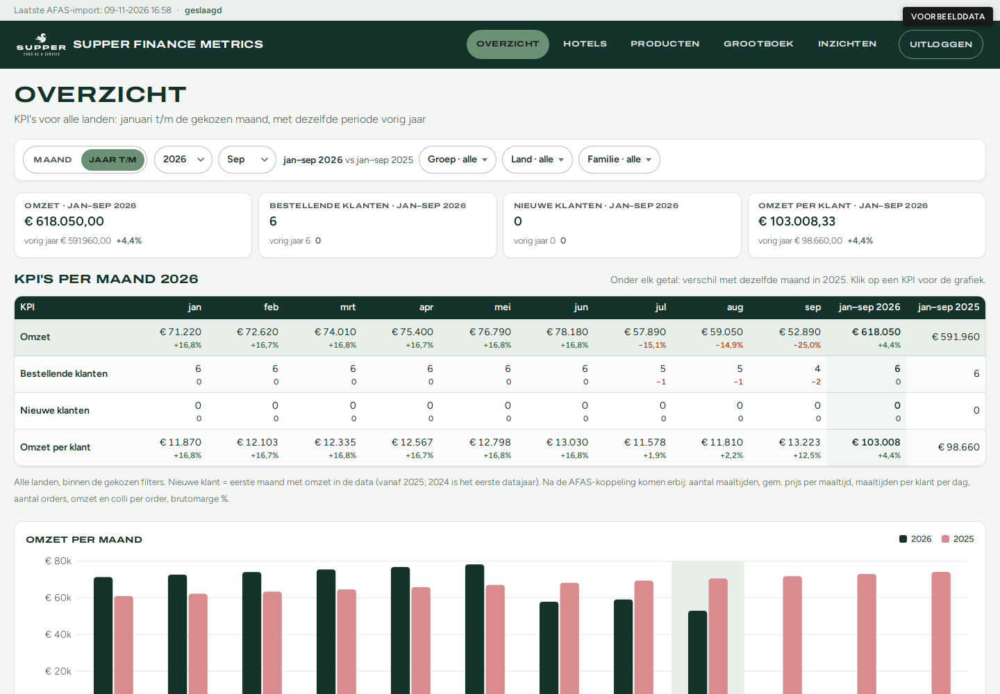
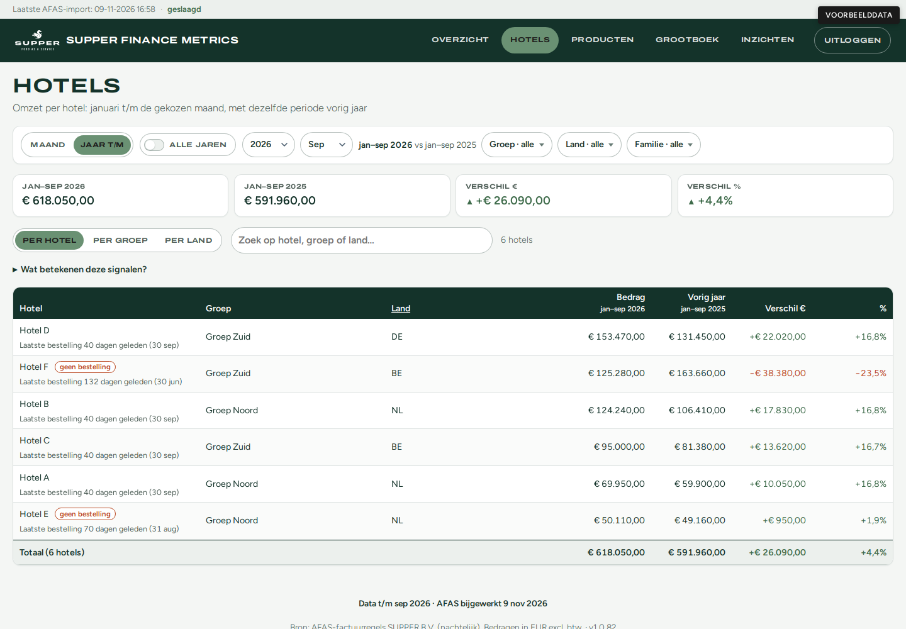
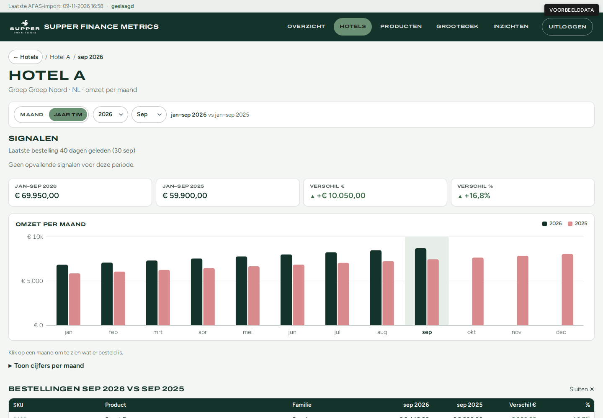
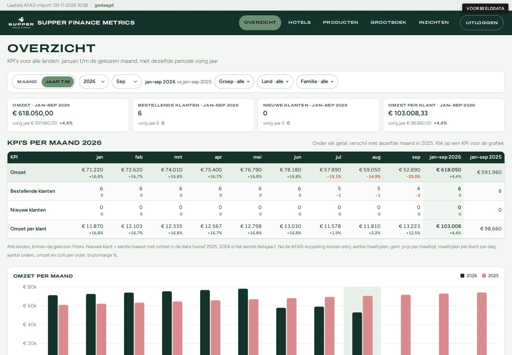
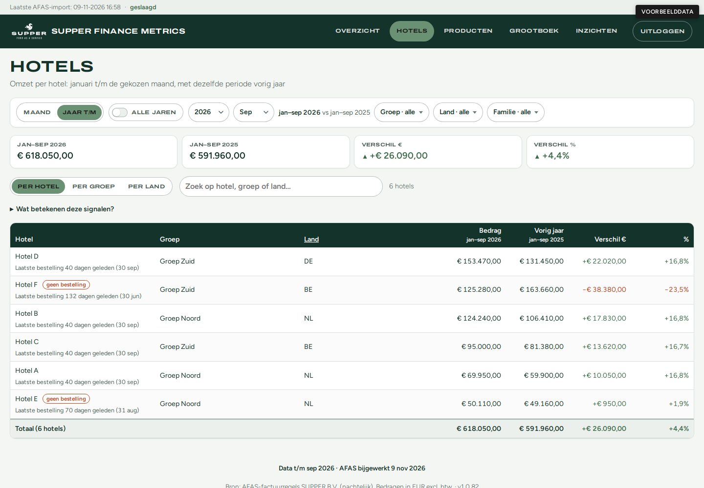
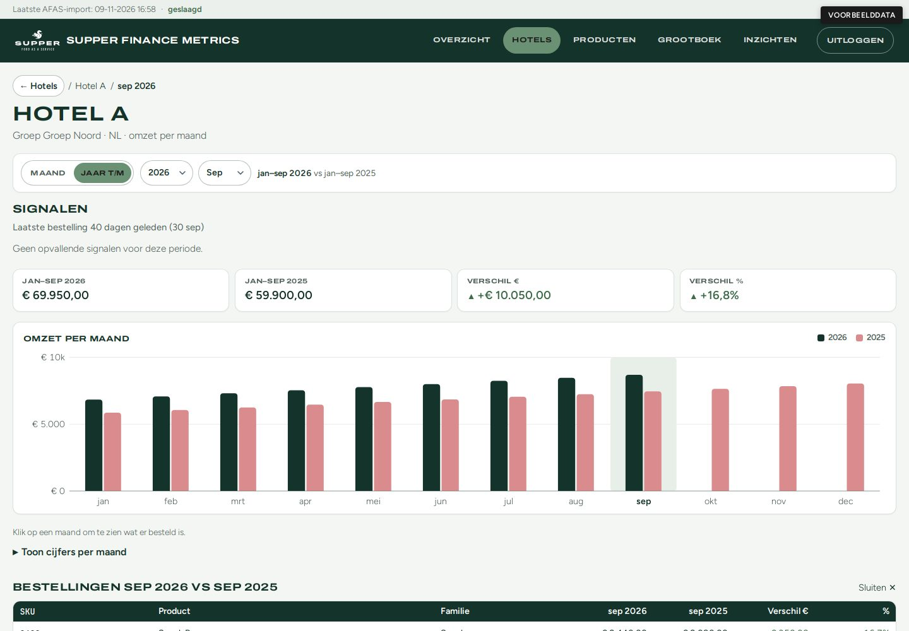

Case
Supper omzetdashboard
Een login-gated omzetdashboard op AFAS-factuurregels. Het vervangt een Excel-werkboek met tabs voor jaar, maand en productniveau: actuele omzet zonder handmatige exports voor iedere vraag.



Wat het is
Omzet uit AFAS, zonder Excel tussendoor
Het dashboard heet Supper Finance Metrics. Het leest factuurregels uit AFAS Profit en telt omzet altijd als som van Regelbedrag in euro, alleen voor de administratie SUPPER B.V. Na inloggen zie je vijf schermen: Overzicht, Hotels, Producten, Grootboek en Inzichten.
Resultaat
Van Excel-export naar nachtelijke sync
Elke nacht haalt een sync de factuurregels op en publiceert ze naar het dashboard. De interface toont alleen data als de bron AFAS is; er is geen terugval op Excel in de UI.
Schermen
Wat je ziet en wat het laat zien
Elke pagina volgt dezelfde opbouw: titel, periodebalk, filters, vier KPI-kaarten en een tabel. De periode is Maand of Jaar t/m, altijd vergeleken met dezelfde periode vorig jaar. Filters op groep, land, hotel en familie werken tegelijk (ÉN).
- Overzicht. KPI’s voor omzet, bestellende klanten, nieuwe klanten en omzet per klant; tabel per maand; sectie «Aandacht nodig» met signalen.
- Hotels. Lijst per hotel (of groep/land) met verschil ten opzichte van vorig jaar, zoeken en sorteren; detail met maandgrafiek, maandtabel en productmix.
- Producten. SKU’s gegroepeerd op familie; productpagina met grafiek en hotels die het product kopen.
- Grootboek. Omzet per grootboekrekening zoals in de P&L, met filters op GL en hotel.
- Inzichten. Nederlandse AI-chat: kort antwoord, optionele grafiek en datatabel. Cijfers komen via server-side tools op SQLite, niet uit gissen van het model.

-

Hotels: lijst, verschil en signalen · Voorbeelddata, geen echte cijfers -

Hoteldetail met maandgrafiek · Voorbeelddata, geen echte cijfers
Aanpak
Eerst vastleggen wat het moet doen, dan bouwen
De productbron is PRODUCT.md: backlog en «Huidige product». Wijzigingen documenteer ik eerst, daarna bouw ik. Zo blijft zichtbaar wat erin zit en wat bewust later komt.
- Eerst een PHP-dashboard met import naar SQLite.
- Daarna hotel-views, Inzichten (AI met tool-SQL), nachtelijke AFAS-sync met publish, en login per gebruiker.
- Veel kleine PR’s: van de eerste gemergde PR tot v1.0.82.
Techniek
PHP, SQLite en een nachtelijke AFAS-sync
- Stack. PHP 8 en SQLite; geen Node-build voor de app. Front controller in
public/. - Data. Nachtelijke sync haalt de connector Profit_SalesinvoicesLines op (alleen-lezen), filtert op SUPPER B.V., en publiceert naar de dashboarddatabase. Alleen EUR telt mee.
- Login. E-mail plus wachtwoord per gebruiker; accountsbestand buiten de webroot. CSRF en rate limit op login; wachtwoord vergeten via SMTP.
- Hosting. Subdomein op Hoasted (cPanel); deploy via GitHub Actions met rsync. Staging apart.
- Inzichten. Chat via OpenRouter; antwoorden met exacte SQL-aggregaten uit de database.
Apart van dit dashboard beheer ik ook de WooCommerce-webshop van Supper Services.
Tijdlijn
Van eerste commit tot v1.0.82 in 39 dagen
Eerste commit: 18 september 2026. Huidige tip v1.0.82: 27 oktober 2026.
Op main: 163 commits en 75 gemergde PR’s.
- 18 sep. Eerste commit en eerste gemergde PR: PHP-dashboard v1 met login, Jaarlijks, Maandelijks, Producten en filters.
- 28–30 sep. Hotel-view, grootboek-rename, vaste paginaopbouw, Overzicht-KPI’s en intensieve Inzichten-iteratie.
- 18–26 okt. Nachtelijke AFAS-sync, publish naar het dashboard, live AFAS zonder Excel-terugval in de UI.
- 27 okt. E-mail-login met wachtwoord vergeten, staging-omgeving, en v1.0.82.
Stand
Wat er nu staat
- Vijf schermen achter login, met deelbare filter-URL’s.
- Nachtelijke AFAS-import met statusregel (geslaagd / mislukt / verouderd).
- AI-inzichten op dezelfde factuurregels, met exacte tabellen en grafieken.
- CI-tests op PR’s; aparte staging- en productiedeploy.
De beelden op deze pagina gebruiken lokale voorbeelddata (generieke hotels), geen productiedata uit AFAS.
Herkenbaar?
Draait jouw omzetoverzicht nog in Excel op exports?
Laat zien welke tabbladen je nu bijhoudt en welke cijfers je elke week nodig hebt. Dan kijk ik of een dashboard op je bestaande data past.